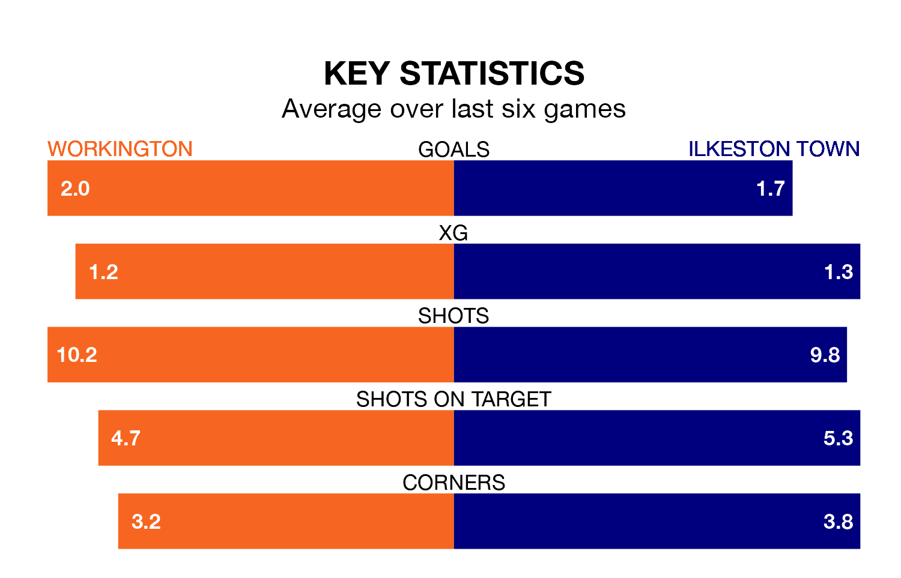

Workington welcome Ilkeston Town to Borough Park on Saturday hoping to break their six-match run of draws in Northern Premier League.
It means Workington have earned six points from their last six games.
They face an Ilkeston side who have collected 11 points from the last possible 18, and lost their last two games.
With 42 goals in 22 games so far this season, Workington are the league's joint-third-highest scorers with 1.9 goals per game. But they are conceding more than average too, letting in 47 goals at a rate of 2.1 per game.
Ilkeston, meanwhile, are average scorers, with 1.7 goals per game. They have conceded 1.5 goals per game.
The hosts are 14th in the table after 22 games, of which they have won seven and drawn seven, earning 28 points.
Town are five places ahead of Workington in ninth, with 10 wins and three draws putting them on 33 points.
Workington's last match was on Tuesday, a 0-0 draw against Macclesfield.
Ilkeston beat Marske United 3-1 last time out, on December 16.
Updated: 12:43, 20/12/23